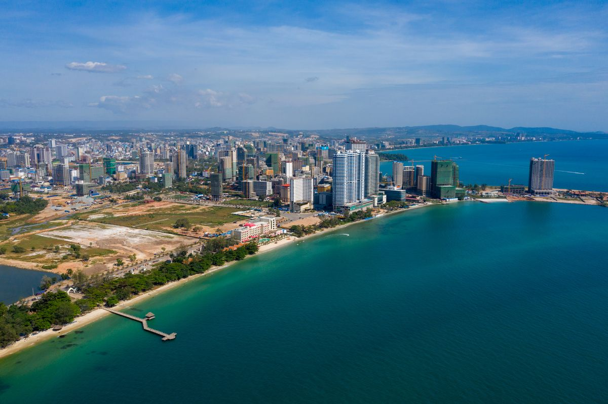
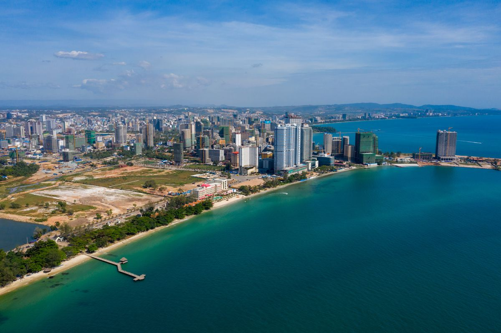

Sihanoukville Province or Preah Sihanouk Province (Khmer: ខេត្តព្រះសីហនុ, 'King Sihanouk') is a province (ខេត្ត, khaet) in southwest Cambodia on the Gulf of Thailand. The provincial capital, also called Sihanoukville, is a deep water port city and a steadily growing and diversifying urban center on an elevated peninsula.[4]
First established as Kampong Som (Khmer: កំពង់សោម), the province was later renamed in honor of former King Norodom Sihanouk, who orchestrated the establishment of Sihanoukville city and the Sihanoukville municipality as this took place alongside the construction of the Sihanoukville Port, which commenced in June 1955. The only deep water port of Cambodia, it includes an oil terminal and a transport logistics facility.[5][6]
Sihanoukville Province is divided into four districts, each with a distinct economic character, defined largely by location and access to resources.[7] In addition to the port and the growing tourism industry, the activities of countless NGOs and international investment have contributed to the rapid economic growth of the province over the course of the last decade.[8] Primary economic sectors are transport and logistics, process manufacturing, agriculture and fisheries, textiles, and real estate.
The islands and beaches of Sihanoukville Province are an international tourist destination as visitor numbers have risen steadily since the late-20th century.[9][10]
pSihanoukville municipality was elevated to provincial status on 22 December 2008 after King Norodom Sihamoni signed a decree converting the municipalities of Kep, Pailin, and Sihanoukville into provinces, as well as incorporating Kompong Seila District.[11][12] As one of Cambodia's agriculturally and industrially most diverse provinces, its economic future has a solid basis, although the essential sectors of agriculture and tourism require strict and permanent administrative protection of local natural resources.[13][14][15]